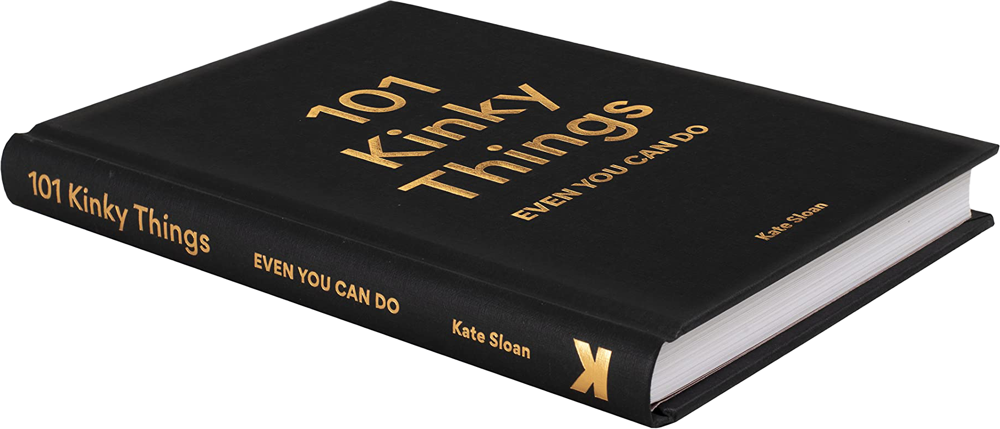
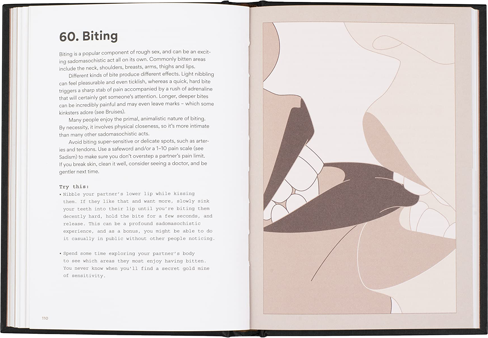
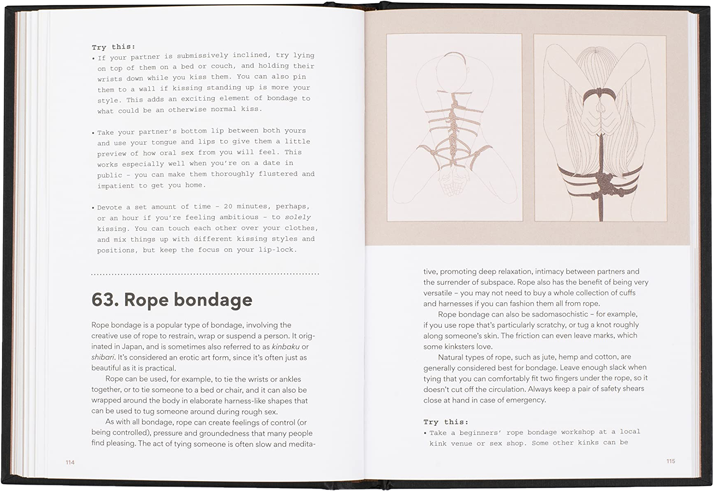

101
Kinky
Things Even You Can Do
Kate Sloan
Illustrations by Ewa Żak
Available October 12, 2021
Preorder your copy

Curious?
Everything you wanted to know about kinky practices is covered in this highly entertaining and readable book. Known for her bold, witty prose on all matters related to the bedroom, Kate Sloan makes this an accessible subject for anyone curious about new ways to spice up their sex lives. Whether you are looking for ideas, clarification, or just an enjoyable read, there is plenty here to keep you intrigued. The text is accompanied by helpful tips and illustrations.
Take a peek…
  Was it good for you?
Camille Virginia, author of The Offline Dating MethodKate Sloan is on a mission to help her followers embrace their inner kink in authentic, actionable ways–and in her new book, she delivers. What I love most about Kate and her eloquent writing is how she can take topics that are often intimidating for the ’mainstream’, and turn them into completely approachable advice, resources, and conversations. If you're considering expanding your sexual horizons in a healthy, open, communicative way, you'll really enjoy this book.
About the author
Kate Sloan is a journalist, author, blogger, podcaster, and educator who has been writing about sex online and in print for over nine years. 101 Kinky Things is her first book. Her second book, 200 Words to Help You Talk About Gender & Sexuality, will also be published by Laurence King.